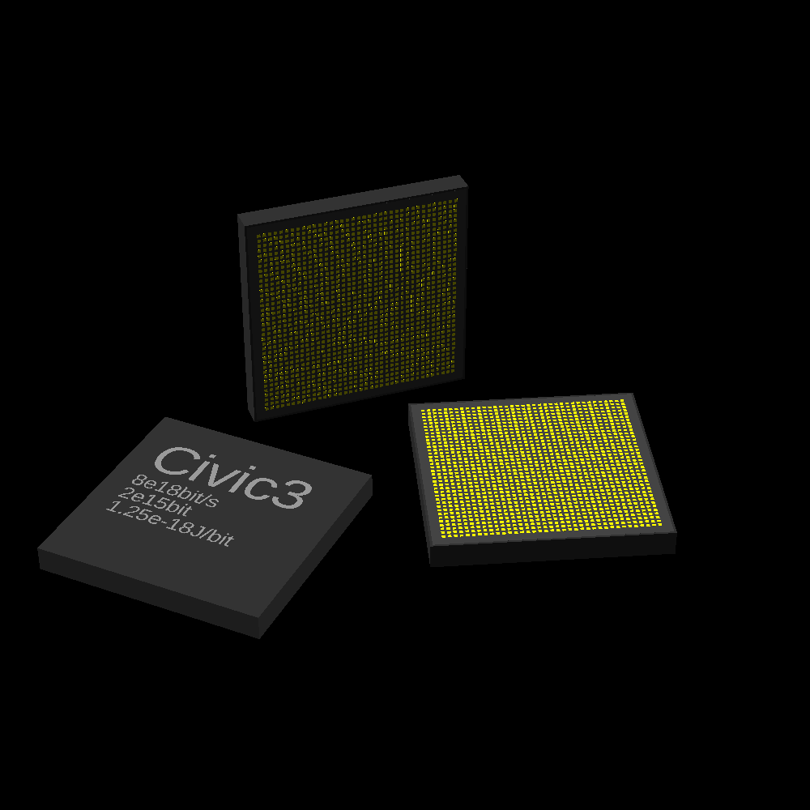
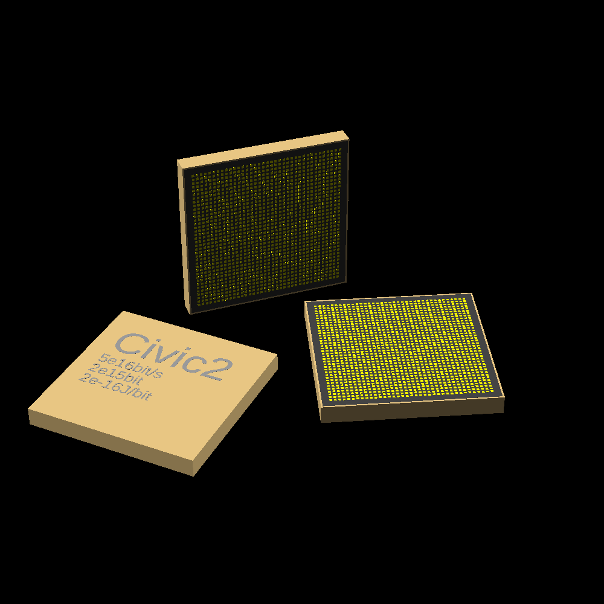
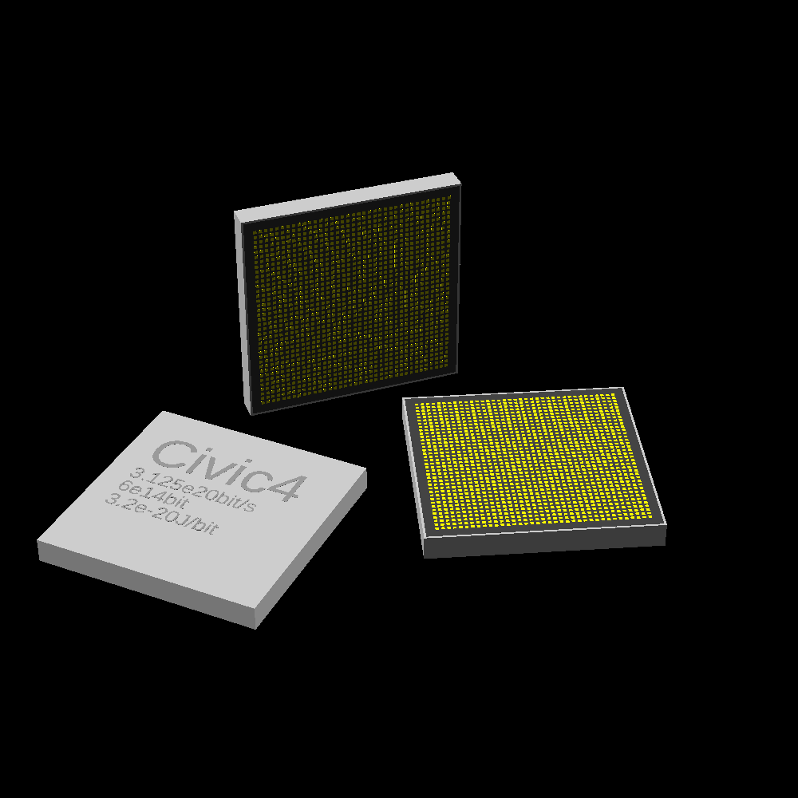
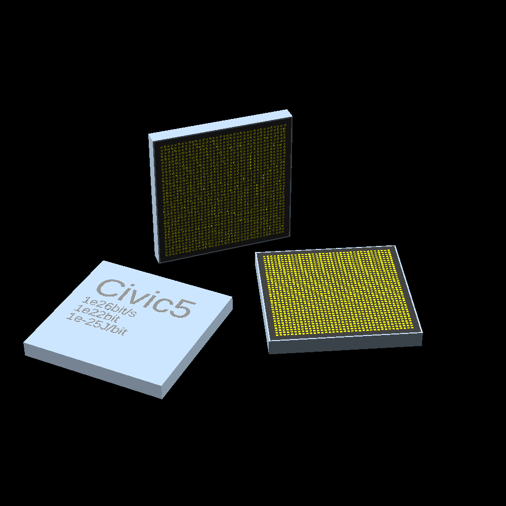

link to this page
Civic chips

Civic chips are one of the more widespread forms of computronium and one of the easiest ways to produce additional computing power. The original civic chip was a community-driven open project, made by collaboration of independent settlers, asteroid miners, and numerous other people whose lives place them far away from the centralized manufacturing centers of society, which at the time the project started were a necessity for producing usable computer hardware. Over time the project expanded, resulting in a series of chips all optimized for different methods and scales of manufacturing.
The chips all have dimensions of 10mm by 10mm by 1mm and use the same interface, making them largely interchangeable with each other.
The shared interface is a significant bottleneck in the civic chips, as while within the logic gate array inside the chip transfer speeds are practically never an issue, the fastest data transfer speeds across the interface (ie. to and from the chip) achievable in practical conditions are just a little over 4e13 bits/s (5TB/s), meaning that fully loading the chip might still take somewhere around 20 to 30 seconds (notable exception of the civic-5 chip, which due to its massive memory might take a whole 10 minutes).
Civic 2, 3, 4 and 5 were written based on the Beyond Cmos paper. The actual math can be found here.
Civic 1 work in progress
Civic-1 chips are made by ion beam deposition of silicon, allowing a monocrystaline silicon block to be slowly grown as low energy ions hit the surface and arrange themselves into the crystal latice.
Other elements such as copper, phosphorus and aluminium are precisely deposited with additional ion beams among the silicon to embed power and data lines in the crystal block, as well as to produce the doped semiconductor junctions needed for transistors.
The chip as a whole behaves like an FPGA chip, allowing custom hardware to be defined on a software level and implemented through switching of connections inside the chip.
Its design practically prohibits efficient manufacturing using large scale methods, as the lengthy ion beam deposition process is pretty much the only way to produce its 3d structure, leading to the project having been pretty much forgotten for entire gigaseconds despite having technically been fully successful at its goal of creating a powerful computer chip which is not prohibitively expensive for single individuals or small communities to produce independently.
They do still benefit from being manufactured in batches, as ion beam printing machines typically can't use full power on a single chip.
A machine which for example can reach a maximum deposition rate of 5 micromol per second might only be able to deposit an average of 5 to 10 nanomol per second if only a single chip is being printed, just because of limited power per area that should be deposited by the ion beams on the printed object, whereas if 100 chips are being printed at once the same machine might be able to average 500 nmol to 1umol per second by just giving each chip a small pause to cool down after material is deposited.
| Civic-1 chip elemental makeup |
|---|
| Silicon | 232.9 mg | 8.293 mmol |
| Copper | 17.3 mg | 272 µmol |
| Gold | 5 mg | 25.38502 µmol |
| Phosphorus | 51.373 µg | 1.6586 µmol[s] |
| Aluminium | 44.752 µg | 1.6586 µmol[s] |
| Total | 255.3 mg | 8.5937 millimol |
computation rate: 1e16 bit/s
memory: 1e14 bit
efficiency: 1e-15J/bit [s]
max. power consumption: 10W
Civic 2

Civic 2 relies on indium arsenide tunneling field effect transistors, and can be easily produced through ion beam printing, requiring only materials that are easily extracted through low temperature electrolysis.
The civic-2 is practically useless in comparison to the civic 3 and 4 chips, but it maintains its own niche thanks to the possibility manufacturing it at truly small scale with relatively cheap equipment while also being much more energy-efficient than the civic-1 chip.
| Civic-2 chip elemental makeup |
|---|
| Arsenic | 206.5 mg | 2.75621 mmol |
| Gallium | 192.2 mg | 2.757 mmol |
| Copper | 173 mg | 2.7244 mmol |
| Gold | 5 mg | 25.38502 µmol |
| Indium | 1.3 mg | 11.322 µmol |
| Total | 578 mg | 8.27431702 millimol |
computation rate: 5e16bit/s
memory: 1e15bit
efficiency: 2e-16J/bit
max. power consumption: 10W
Using 64-bit multiply-accumulate operations in accordance with the standard Top500 benchmark, this chip can achieve maximum sustained 1.1162 TeraFLOPS, which is comparable to the Intel's ASCI Red supercomputer from 1997, AMD's ATI Radeon HD 4800 graphics card from 2008, or the AMD Ryzen™ Threadripper™ PRO 3995WX CPU from 2020.
Civic 3
Civic 3 relies on graphene nanoribbon tunneling field effect transistors, exploiting graphene's ability to act as a p-type or n-type semiconductor depending on the presence of electrostatic charge. It requires equipment capable of forming graphene for that purpose. In terms of material, the chip is made almost entirely from carbon, making it very cheap to manufacture if the equipment to do so is available.
At just 7.8 electronvolts per bit flip, this device sits right near the edge of what charge transfer logic can achieve.
Due to the heat-resistant materials and adequately high energy barrier, these chips are notably capable of operating in fairly extreme temperatures upwards of 1000 kelvin (though anecdotally known to have often survived as much as 1200 kelvin) without suffering increased error rates or decreasing computation efficiency.
In theory it should take about 20.9 teraseconds for even a single bit stored in the chip to spoil due to thermal noise, but in open space there will usually be about 31 to 32 single bit corruptions each megasecond (corruption rate of about 3.1688e-17 Hz/bit) just due to radiation, which is decreased to about 8.556e-20 Hz/bit inside habitats adhering to the recommended standard 10t/m2 aerial hull density, or about 7.315e-19 Hz/bit at only 1t/m2.
computation rate: 8e18bit/s
memory: 1e15bit
efficiency: 1.25e-18J/bit
max. power consumption: 10W
Using 64-bit multiply-accumulate operations in accordance with the standard Top500 benchmark, this chip can achieve maximum sustained 178.59 TeraFLOPS, which is comparable to the Cray XT4 supercomputer from 2007.
Civic 4

Civic 4 relies on bilayer pseudospin field effect transistors, exploiting quantum effects occurring between closely placed sheets of graphene.
At just 0.2 electronvolts per bit flip, this device falls well outside of what could have been done with charge transfer logic as not even a single electron would be moved in the switching of a gate.
Instead of moving charges it manipulates the spin of electrically neutral quasiparticles called excitons, formed by pairs of electrons and electron holes in the graphene nanoribbons.
It requires equipment capable of forming graphene for that purpose, as well as very precise nanoscale assembly equipment to ensure exact spacing of the graphene nanoribbons.
The chip is still about an order of magnitude less efficient than the theoretical minimum of 0.018eV/bit imposed by the landauer principle on computation at room temperature, but the fact it can manage and correct the noise at that level is still a perfect example of posthuman engineering producing a system capable of consistently operating precariously close to the absolute allowable limit.
The extra space needed for systems managing the noise and errors also roughly halves the data storage capacity of the chip.
Due to the incredibly low energy barrier, bits stored in the chip will dissipate rapidly when the chip is not powered.
At 300 kelvin the half life of a bit in an unpowered civic-4 chip is about 157 milliseconds, which means that every single bit of data on the chip is expected to have become corrupted by thermal noise after only 7.85 seconds of power loss.
To actually recover data from an unpowered civic-4 chip, it would need to lose power while already cooled below 50 kelvin, which slows the accumulation of rotten bits enough that they could still be repaired by commonly used error correction algorithms for about one kilosecond since power loss.
computation rate: 3.125e20bit/s
memory: 6e14bit
efficiency: 3.2e-20J/bit
max. power consumption: 10W
Using 64-bit multiply-accumulate operations in accordance with the standard Top500 benchmark, this chip can achieve maximum sustained 6.9761 PetaFLOPS, which is one third as much as the IBM Sequoia supercomputer in 2025
Civic 5

Civic 5 is a departure from chasing ever higher efficiency, instead focusing on memory. The Civic 5 makes use of spintronic gates that can be made much smaller than the ones used in previous chips, allowing massively more of them to be packed into a single chip.
For practical uses the Civic 5 is closer to a solid state hard drive, as the previous chips dwarf it by orders of magnitude in flip rate and efficiency, though that may be the case it still provides the ability to load arbitrary circuits into it and perform computation, delivering computing power and efficiency roughly on par with the ancient GPUs the early terran artificial intelligences were trained and ran on.
Due to the relatively low efficiency and large memory of the chip, completely filling its memory with data or software-defined circuitry will consume no less than 1920 joules of energy. On the plus side, as spintronic circuits tend to not be volatile, the chip can greatly decrease space requirements when used with other civic chips and delegated for storing data which is rarely accessed.
The chip is also potentially useful for programs which have immense memory requirements yet fairly small processing requirements, such as among other things intelligences wishing to run themselves in smallest possible form factor for extreme lengths of time.
For example, the chip can on its own fit the entire UEIA model and run it, at the cost of running 1 788 800 times slower than the recommended inference rate.
computation rate: 1.25e14 bit/s
memory: 2.4e16 bit
efficiency: 8e-14J/bit
max. power consumption: 10W
Using 64-bit multiply-accumulate operations in accordance with the standard Top500 benchmark, this chip can achieve maximum sustained 2.7904 GigaFLOPS, which is comparable to the NEC SX-2 supercomputer from 1983, and some of the lower end CPUs from the first quarter of the 21st century.
Required chip number calculator
If you know the memory and flip rate requirements you can plug them in here and you'll get the table below tailored to the minimum number of chips needed.
Checking "focus on memory" will disregard the flip rate requirement and use the smallest number of chips required to fit the whole program, which may consequently result in processing use above 100%, which will be converted to underclock, ie. how many times slower the program has to run to fit within the computational power delivered by the chip.
If the underclock is 1, the program can run at full speed.
The bare substrate volume is shown directly as volume and also as the size of a cube which would have that same volume, as it helps to put it in perspective.
| civic chip requirements | bits, bits/s |
|---|
| number needed | power draw | bare substrate volume | processing used | memory used |
| Civic-1 chip | x | x | x m3 | x% | x% |
| Civic-2 chip | 4472 | 44.72kW | 447.2cm3 | 100% | 0.405% |
| Civic-3 chip | 28 | 279.5W | 2.8cm3 | 64.34% | 99.82% |
| Civic-4 chip | 31 | 7.1552W | 3.1cm3 | 2.3% | 96.85% |
| Civic-5 chip | - | - | - | - | - |
relevant pages
 computation
computation